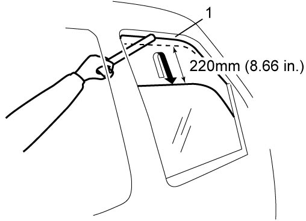

9E
| Inspection of Power Window Anti-Pinching Function |
1)Lower door glass fully.
2)Place wood handle of hammer as shown in figure.
NOTICE:
Putting hammer handle from outside the vehicle may damage door visor (if equipped).
Put hammer handle from inside the vehicle when checking anti-pinching function.
NOTE:
Use switch on each door when checking.
3)Activate auto-up function of power window.
4)Check that window glass automatically reverses at the position the hammer handle is lightly pinched to prevent the hammer handle from being pinched hard (to a point about 220 mm (8.66 in.) below outside top end (1) of glass run). 
5)If the function is faulty, initialize power window system.


 "Expand image")